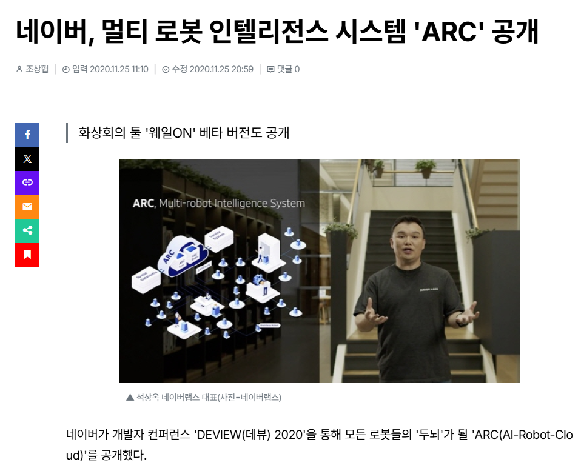

Physical AI 핵심 기술 가이드. 초보자용 기술 개요 → HW×AI → VLA 진화 → WFM → 데이터+시뮬 → BD Atlas → NVIDIA → 투자 thesis. 출처: 논문 원문, NVIDIA, Google DeepMind, Physical Intelligence, BLS, Deloitte.
🔍 로보티즈의 "액추에이터가 바뀌면 데이터 90%를 다시 쌓아야 한다" — 팩트체크 로보티즈 IR
📌 결론부터
"데이터 90% 재수집" 주장은 과장됨 — 실제 재수집 비율은 50% 내외이고, VLA Cross-Embodiment 성숙 시 lock-in 효과는 약화될 것.
다만 로보티즈의 경쟁력은 lock-in이 아닌 곳에 있음:
① 다이나믹셀 생태계
전 세계 로봇 R&D의 사실상 표준 액추에이터. 오픈소스 생태계로 유저 네트워크 효과.
② 우즈벡 데이터 팩토리
한국 인건비의 1/10. 텔레오퍼레이션 기반 행동 데이터 수집 단가에서 압도적 우위.
③ NVIDIA 파트너십
Kimodo(텍스트→동작) 기술 협업. 아래 영상 참고.
④ 수직 통합
액추에이터 제조 + 데이터 팩토리 + 오픈소스 SW를 한 회사가 보유. 이 조합을 가진 곳이 없음.
lock-in은 시간이 갈수록 약해지지만, ①~④는 시간이 갈수록 강해지는 구조적 해자.
로보티즈 그룹미팅(20260518) IR 발언
· "100개 데이터 테이블 중 약 10%만 재활용 가능, 나머지 90%는 재수집 필요함"
· "현재 기술적 한계일 수 있고, 범용 로봇으로 발전하면 달라질 수도 있음"
· "시장 선점이 굉장히 중요함. 테슬라도 부품 미확정 시 데이터 무의미해지므로 폐쇄적으로 운영하는 것임"
이 주장의 맥락
로보티즈의 비즈니스 모델은 "다이나믹셀 판매 → 데이터 lock-in → 데이터 팩토리 매출(시간당 $800~$1,000)"로 연결되는 구조임. "바꾸면 90% 날아간다"는 주장은 이 lock-in 논리를 강화하는 방향의 발언임.
✅ 맞는 부분
텔레오퍼레이션으로 수집하는 관절 위치·속도·토크·전류값은 해당 액추에이터의 감속비·토크 커브·백래시에 100% 종속됨. 액추에이터가 바뀌면 이 수치들은 못 씀. 여기까지는 기술적으로 정확함.
❌ 과장된 부분
VLA 모델 전체 학습 파이프라인에서 시각·언어 데이터(~50%)는 액추에이터와 무관하게 재활용됨. "90%"는 로우레벨 관절 데이터만 놓고 본 수치이며, 실제 재수집 비율은 50% 내외임.
VLA 데이터 계층별 액추에이터 종속 여부
데이터 계층
비중
액추에이터 종속
교체 시 재활용
카메라 이미지
~40%
❌ 무관
✅ 전량 재활용
언어 명령
~10%
❌ 무관
✅ 전량 재활용
관절 궤적 (Action)
~30%
✅ 종속
❌ 재수집 필요
로봇 상태 (State)
~20%
✅ 종속
❌ 재수집 필요
구조적으로 해결되고 있는 문제임
Cross-Embodiment
Octo/OpenVLA: 25종+ 로봇 통합 학습. 새 액추에이터에 수 시간 fine-tuning으로 적응 가능
Dual System
GR00T N1/CogACT: System 2(인지)는 액추에이터 무관. System 1(모터)만 fine-tuning
Sim-to-Real
새 액추에이터 물리 파라미터를 시뮬레이터에 넣고 합성 데이터 자동 생성 가능
💡 로보티즈 스스로 인정한 부분이 핵심임
"범용 로봇으로 발전하면 달라질 수도 있음"이라고 직접 답변함. 데이터 팩토리의 lock-in 근거가 시간이 갈수록 약해질 수 있다는 의미임.
결론
· 현재(2026): 로우레벨 한정으로 50~70% 재수집 필요. "90%"는 과장임.
· 2027~28: VLA Cross-Embodiment 성숙 시 fine-tuning 수 시간으로 대체 가능해져 lock-in 효과 점진 약화 전망.
· 진짜 해자: lock-in이 아니라, 우즈벡 인건비(한국의 1/10) 기반 가격 경쟁력과 다이나믹셀 유저 네트워크에 있음.
ROBOTIS AI Sapiens #2 — 텍스트 한 줄로 휴머노이드 전신 동작 생성 (NVIDIA Kimodo) · 출처: 로보티즈
📋 Update Log ▼ 펼치기
⚡ 2020 → 2026 — 피지컬 AI는 6년 만에 여기까지 왔다 Before → After
로봇 1대 원가
$150,000
$0
−89% (양산 BOM 기준)
로봇 학습 시간
6개월 / 1종 전용
수 시간 / 25종+
Cross-Embodiment 시대
글로벌 출하량
~0대 (2020)
0대
2025 실적 (Omdia)
Atlas 액추에이터
8종 (구형)
0종
양산 설계 단순화 (BD)
정밀 조작 성공률
~60% (2023)
0%
Pi0 Flow Matching
부품 구성 비교 — 산업용 로봇 → 기본 휴머노이드 → 풀스택 휴머노이드
산업용 로봇 UR5e 기준
기본 휴머노이드 Unitree G1
풀스택 휴머노이드 Atlas / Optimus
관절 (DoF)
6
23
28~56 ▲ 9배
감속기 (개)
6
23 유성
24 하모닉20+RV4
감속기 단가
~$100
~$200 유성
$350~800 ▲ 4~8배
센서
힘/토크 1개
IMU + 카메라
LiDAR+토크+IMU+촉각+360°
인버터/PMIC
6개
23개 SiC/GaN
28개+ ▲ 관절당 1개
MLCC (추정)
~수백 개
3,000~5,000개
~10,000개 ▲ 테슬라 車(1.5~1.7만) 근접
AI 칩
PLC $6K
NPU 1개 $500
Jetson Thor + VLM
배터리
없음 (전원)
2.3kWh $299
4h 가동 · Self-swap
1대 BOM
$35K (셀 단위)
~$17K
$90K+ 초기
작업 자유도
고정 반복
이동 + 반복
비정형 적응
📌 늘어나는 것이 3개 있음
① 감속기·액추에이터 — 단가 4~8배, 개수 4배 → BOM의 56%. 자동차에서 MLCC가 폭증했듯, 휴머노이드에서는 감속기가 같은 위치. ② 칩 주변 반도체 — 관절 56개 = 인버터/PMIC 28개 + AI SoC. DoF가 늘수록 FC-BGA·MLCC·전력관리칩이 비례 증가. 자동차 ECU→HPC 때 한국이 공급한 것과 같은 구조. ③ 학습 데이터 — 물리 세계 학습에 텍스트 LLM 대비 90배 데이터 필요(9,000조 토큰). HW는 중국이 이미 양산 경쟁 중이라 병목이 아님. 데이터를 먼저 모으는 자가 해자.
BD(HMG) captive 25,000대, Tesla Optimus 100만대 목표, Amazon Digit 배포 — 최강자들이 직접 투자.
기업
2026 목표
2028~30 목표
가격
배터리
🇺🇸 Tesla
5~10만 CAPA
100만대 목표
$20~30K
2.3kWh / 2170 원통형
🇺🇸 Boston Dynamics
RMAC 개소 (여름)
3만 CAPA (2028E)
—
Self-swappable
🇨🇳 AGIBOT
수만대
—
—
—
🇨🇳 UBTECH
1만대
—
—
—
🇨🇳 Unitree
—
—
$16K~
—
🇺🇸 Figure AI
—
—
—
—
🇺🇸 Agility
1만 CAPA
3만대 (2028E)
—
—
출처: BD IR, Tesla IR, Amazon IR, HMG IR (JPM 2026)
군사용 로봇 — 산업용보다 도입이 빠를 수 있다
산업용 로봇은 노동자가 반대하지만, 군사용 로봇은 병사들이 먼저 원함. 전장에서 로봇은 일자리를 빼앗는 존재가 아니라 목숨을 대신 걸어주는 존재.
우크라이나 전쟁 (2026.05): 무인 드론·로봇이 전쟁 양상을 바꾸는 중. 우크라이나의 전쟁 수행은 상당 부분 무인화 — 로봇, 드론, 원격 조종 탱크가 러시아군 대비 갑작스러운 우위를 제공. 수개월간 인력난에 시달리던 우크라이나가 무인화로 돌파.
[CNN 2026.05.30]
출처: CNN · 자체추정
AI 침투율 — 아직 1%도 안 됨
13.5억
생성형 AI 사용자
전 세계 인구의 16%
~1억
유료 AI 사용자
전 세계 인구의 1%
0.1~0.2%
코드/API 헤비유저
1,000~2,000만 명
피지컬 AI·킬러앱 확산 전 수치. 1%가 10%만 돼도 인프라 수요 10배. 수요 상단은 크게 열려 있음. 출처: Microsoft, OpenAI, Alphabet, SlashData, Stack Overflow
📌 소결
로봇의 뇌(파운데이션 모델)가 빠르게 진화 중. 이제 승부는 그 뇌를 로봇 몸 안 작은 칩에 실시간으로 압축하는 온디바이스 추론으로 내려옴. 클라우드 왕복으론 냉장고도 못 든다.
추론칩(Jetson, Tesla AI5 등)은 NVIDIA·Tesla가 만들지만, ①칩에 붙는 주변 반도체(FC-BGA 기판·MLCC·전력관리)와 ②감속기·액추에이터는 한국에서 구성될 확률이 높음.
자동차 ECU가 HPC로 통합될 때, 칩(SoC)은 Infineon·NXP 등이 과점했지만 FC-BGA·MLCC·전력관리는 삼성전기·대덕전자 등 한국이 공급했음. 온디바이스 추론칩에서도 같은 구조가 반복될 가능성이 높음.
피지컬 AI의 핵심 병목은 하드웨어가 아니라 학습 데이터. 로봇 HW는 이미 중국에서도 양산 경쟁 중이라 병목이 아님. Jensen Huang: "합성 데이터는 실제 데이터를 대체하지 않음. 실제 데이터를 최대한 모아야 함."[NVIDIA CEO, Bloomberg] — 물리 세계 데이터를 모아줄 디바이스가 다음 병목 투자 아이디어.현대차(fleet 수백만 대 + RMAC), 로보티즈(다이나믹셀 + 우즈벡 데이터 팩토리 + 오픈소스 생태계). [자체추정]
학습·배포까지(L5a: Omniverse·Isaac·OSMO)는 NVIDIA가 쥐지만, 배포된 다수 로봇을 현장에서 매일 운영·관제·작업분배하는 'Field Operations OS'(L5b)는 NVIDIA 스택의 빈 칸.네이버 ARC가 1784 빌딩 실배치로 그 자리를 채움 — 모델·시뮬(L5a)은 글로벌이, 현장 운영 OS(L5b)는 한국 소버린이 가져가는 구도. [자체추정]
🗺️ Physical AI 기술 발전 로드맵 5 Stages
각 Part는 '초보자 설명 → 심화 분석'으로 구성. 하나의 발전 궤적 위에 놓여 있음.
🔄 Part 1. 범용 OS — 패러다임 시프트 Octo · OpenVLA
로봇 기종 바뀌면 처음부터 다시 코딩하던 시대.
VLA가 "로봇용 안드로이드"를 만들었음. 1종 전용 학습 6개월 → 25종+ 동시 학습, 새 로봇 fine-tuning 수 시간.
NVIDIA 키모도처럼 텍스트 한 줄("상자를 들고 오른쪽으로 옮겨라")만으로 전신 동작 데이터를 생성하는 단계까지 진화.
[Octo/OpenVLA · NVIDIA GTC]
심화 — Physical AI 기술 스택
로봇 두뇌를 구성하는 AI 기술 계층. "프로그래밍하지 않고 가르친다" — BD Interim CEO Amanda McMaster
출처: NVIDIA, Google DeepMind, Physical Intelligence, Toyota Research
심화 — Locomotion vs Manipulation
보행(Locomotion)은 해결 단계에 진입했으나, 조작(Manipulation)은 여전히 핵심 난제. ROI를 직접 창출하는 것은 조작 능력.
출처: BD IR, Tesla IR, IFR
⚠️ VLA가 못 보는 것 — Demo vs Reality Gap
VLA는 강력하지만 입력이 이미지+언어다. 카메라에는 물체의 모양·위치가 보이지만 무게·마찰·미끄러짐·접촉력·관절 토크·충돌 시 발생하는 힘은 직접 관측되지 않는다. 모델이 "물병이 가득 차 보이면 무겁겠다"처럼 추론은 하지만, 환경·물체 상태·센서 품질에 따라 쉽게 흔들린다. 데모 1회 성공과 현장 매일 안정 가동은 완전히 다른 문제다.
데모에서 보이는 것 — 컵 짚기 3단계
① 카메라로 컵을 본다 → ② 팔을 움직인다 → ③ 그리퍼로 잡는다. 간단해 보임.
실제 필요한 것 — 숨은 7+ 변수
빈 컵/가득 찬 컵 힘 조절 · 표면 마찰 · 손잡이 유무 · 그리퍼 접촉 각도 · 옆 장애물 · 잡는 순간 미끄러짐·회전 감지 · 실패 시 복구. 사람은 무의식적으로 처리, 로봇엔 전부 센서·제어·판단 문제.
왜 텍스트 AI보다 어려운가 (비가역성): 텍스트 생성은 틀리면 수정하면 된다(가역). 로봇이 잘못 움직이면 물건 파손·장비 손상·인명 위험(비가역). 그래서 상용화에 시간이 걸린다. 이 Demo Gap의 구조적 위치 = L5a(모델 배포)에서 L5b(현장 운영)로 넘어가는 전환 — 시뮬에서 잘되던 정책이 좌표계 불일치·센서 지연·모터 응답차로 현장에서 실패. (아래 AI Factory 레이어 도표 L5a→L5b 참조) 기대가 한 번 조정되는 시기가 와도 그건 기술 실패가 아니라 실제 구현 문제가 선명해지는 시기이고, 그 갭을 메우는 시스템 통합 역량 보유 기업이 수혜.
π0 → π0.6(자기개선) 다음 진화. 핵심 질문은 "모델·데이터를 키우면 범용성이 생기나?"가 아니라 "로봇이 어떤 데이터를 어떻게 배워야 범용성이 생기나?". 기존 VLA는 깨끗한 성공 시연만 골라 학습 → 같은 '문 열기'에도 잘 연 것·느리게 연 것·헛손질·실패가 섞이면 애매한 평균 행동을 배움. π0.7은 반대로 실패·느림·실수 데이터까지 쓰되, 각 데이터에 맥락(메타데이터)을 라벨로 붙여 "이건 실수 있는 행동", "이건 느린 행동"으로 구분하게 만든다.
① 에피소드 메타데이터
퀄리티·스피드·실수(mistake)·제어모드를 프롬프트에 명시 → 실패 데이터를 버리지 않고 '실패'라는 이름표를 붙여 학습. 현장에선 성공보다 실패·사람개입 데이터가 더 많이 나오므로 결정적.
② 계층형 구조
하이레벨 폴리시(긴 작업→서브태스크 분해) + 월드모델(다음 목표 장면을 서브골 이미지로 생성) + VLA(액션 청크 출력). 언어로 계획, 이미지로 중간목표, VLA로 실행.
③ 언어 코칭
학습에 없던 장기작업(에어프라이어에 고구마 넣기)을 사람이 단계별 말로 안내해 수행 → 텔레오퍼레이션 시연 없이 새 작업 학습. 코칭 데이터로 하이레벨 폴리시까지 학습.
이머전트 능력(emergent): 소스 로봇 동작을 그대로 베끼는 게 아니라, 월드모델이 타겟 로봇 몸에 맞는 새로운 조작 전략을 스스로 생성(작은 양팔→긴 팔 UR5는 한 팔로 집어 넣기). 명시적으로 안 가르쳤는데 크로스 임바디먼트 전이가 일어남. VLM 백본 = Gemma 3 기반 4B.
투자 시사점 — 'Demo Gap'을 메우는 데이터 전략: ① 데이터 규모가 커지면 평균 품질은 낮아지지만(실패·잡음 증가) 메타데이터를 붙이면 규모가 클수록 성능이 계속 향상 → 현장 배치가 많을수록(실패 데이터 포함) 데이터 우위 = BD·현대차 RMAC·로보티즈 데이터 플라이휠 강화. ② 언어 코칭이 텔레오퍼레이션($136/hr)을 일부 대체 → 신규 작업 학습비용 하락. ③ 월드모델이 실제 조작 가이드(서브골 이미지)로 기여 → WFM의 실용 가치 입증 = Cosmos·네이버 서울 월드모델 의미 강화.
출처: Physical Intelligence π0.7 논문(Steerable Generalist Robotic Foundation Model with Emergent Capabilities) · 자체정리
▼ 부드럽게 움직임. 근데 빠른 반사와 깊은 생각을 동시에 못 함.
🧠 Part 3. 뇌·몸 분리 — Dual System CogACT · GR00T N1
부드럽게 움직이는 건 됐는데, 냉장고를 안으면서(빠른 반사) 동시에 어디로 옮길지(깊은 생각)를 한꺼번에 못 함.
인간처럼 System 1(반사) + System 2(추론)로 나눠서 해결. 반응 지연 500ms+(클라우드) → 10ms(온디바이스 System 1).
Atlas가 실증 사례 — BD 자체 피지컬AI(빠른 반사·역동적 제어)가 System 1, 구글 딥마인드 Gemini(시계열 추론·롱 템포럴 리즈닝)가 System 2를 담당.
[BD 보도자료 2026.01]
심화 — VLA 3대장 비교
현재 Physical AI를 리드하는 3대 VLA 패밀리. 각각 인프라(NVIDIA), Foundation Model(Google), 실전 성능(PI)에서 강점.
출처: NVIDIA Isaac-GR00T, Google DeepMind, Physical Intelligence
▼ 반사+생각 동시에 함. 근데 한 번도 안 본 상황에선 멈춤. 상상력이 필요함.
🔮 Part 4. 물리적 상상력 — World Foundation Model WFM
반사+생각 동시에 하게 됐는데, 한 번도 안 본 상황에선 여전히 멈춤.
WFM = 로봇의 "물리적 상상력". 밀면 깨질 것이라는 미래를 머릿속으로 시뮬레이션해서 행동 결정.
다만 WFM은 아직 완성 단계가 아님. 완성됐다면 로봇이 스스로 데이터를 생성하고 학습할 수 있어야 하는데, 지금은 여전히 데이터 수집과 현장 튜닝 중. 트랜스퍼 러닝 조짐은 보이기 시작 — 냉장고 문 여는 법을 가르쳤더니 다른 문도 열게 됨.
[자체추정]
WFM에 필요한 데이터 규모 — 텍스트 LLM과 차원이 다름
9,000조
Cosmos (WFM)
NVIDIA 2025.01
100조
GPT-5
업계 추정
40조
Llama 4
업계 추정
90배
Cosmos vs GPT-5
물리 세계 학습 격차
출처: NVIDIA Cosmos. 2026.06 Cosmos 3.0 발표 — Mixture of Transformers 기반 옴니 모델(VLM+월드모델+시뮬레이터+정책을 하나로). "compute is data". ※ GPT-5·Llama 4 토큰 수는 공식 미공개, 업계 추정치
왜 물리 세계는 90배 더 많은 데이터가 필요한가?▼ 펼치기
① 차원의 차이 — 텍스트는 1D 순차 토큰. 물리 세계는 3D 공간 + 시간 = 사실상 4D 데이터. 비디오 1초 = 30프레임 × 프레임당 ~256 토큰 = ~7,680 토큰. 같은 1초의 텍스트는 3~4 토큰. 같은 시간의 현실을 표현하는 데 토큰이 ~2,000배 더 필요함. ② 물리법칙 학습 — 텍스트 LLM은 언어의 통계적 패턴을 학습. WFM은 중력·마찰·충돌·변형·유체 등 연속적 물리법칙 자체를 학습해야 함. "사과를 놓으면 떨어진다"를 글로 읽는 것과, 사과가 떨어지는 모든 각도·속도·표면 반응을 시각적으로 학습하는 것은 데이터 규모가 근본적으로 다름. ③ 변형의 다양성 — "사과"라는 텍스트 토큰은 항상 같은 의미. 하지만 영상 속 사과는 조명·각도·크기·배경·재질이 전부 다름. 로봇이 견고한 물리 이해를 갖추려면 같은 물체를 수만 가지 변형으로 봐야 함. 결론: "텍스트로 세상을 설명하는 것"과 "세상을 직접 시뮬레이션하는 것"의 차이. 이것이 NVIDIA가 Cosmos에 9,000조 토큰을 투입한 이유이며, 물리 세계 데이터를 모으는 자(fleet·RMAC·데이터팩토리)가 해자를 가지는 이유.
심화 — WFM 모델 비교 및 과제
핵심 전환: VLA = 현재 관측 → Action 직접 출력 → WFM 기반 = 현재 관측 → 미래 예측 → 최적 Action 선택
REMAINING CHALLENGES
VLA vs WFM-BASED POLICY STRUCTURE
CONVENTIONAL VLA
Image + Language
→
VLM Backbone
→
Action Head
→
Motor Command
보고 → 바로 행동
WFM-BASED POLICY
Image + Language
→
World Model (미래 예측)
→
Value (최적 미래 선택)
→
Motor Command
보고 → 상상하고 → 최적 행동 선택
VPP — Stage1: Predictive Representation 추출 → Stage2: DiT Policy
출처: Cosmos Policy, VPP, DreamVLA, V-JEPA 2, Generators=Policies 논문 원문
▼ Part 1~4에서 뇌는 거의 완성 단계까지 왔음. 이제 진짜 문제 — 이 거대한 뇌를 로봇 몸 안 작은 칩에 어떻게 넣느냐?
🚀 Part 5. 실전 경량화 — 온디바이스 최적화 bVLA · PD-VLA · RTC
모델 크기 7B → 0.5B(14배 압축), 추론 100ms → 10ms. 짧은 데모가 아니라 장시간 안정 가동 + ROI 증명이 진짜 기준.
데모 잘 만드는 기업이 아니라 현장에서 돈 버는 기업만 살아남음.
[bVLA/PD-VLA 논문 · 자체추정]
온디바이스 = SoC 성능 + 메모리(LPDDR) 두 축
① SoC 전체가 좋아야 — CPU만이 아니라 CPU+GPU+NPU 통합 SoC의 TFLOPS/와트가 핵심. CPU는 지휘자(오케스트레이션), GPU/NPU가 연주자(실제 추론). Jetson Thor가 한 칩에 통합한 이유. ② LPDDR이 구조적 필연 — 모델 가중치가 메모리에 통째로 올라가야 추론이 됨. 안 들어가면 스왑 → 수십~수백ms 지연 → 로봇 멈춤. AI 추론은 연산보다 메모리 대역폭이 병목(memory bandwidth bound). 왜 HBM이 아니라 LPDDR? → 로봇은 배터리 전력 한정이라 같은 용량에 전력 반 이하인 LPDDR5X가 필연(RISC 선택과 같은 논리). Jetson Thor 128GB · RTX Spark 128GB 모두 LPDDR5X. ③ 투자 연결 — 데이터센터 = HBM4 수요 / 로봇·AI PC·자율주행 = 고용량 LPDDR 수요. 같은 메모리社(SK하이닉스·삼성)가 두 갈래 수혜. 로봇 대중화 = LPDDR 슈퍼사이클.
[NVIDIA Computex 2026 · 자체추정]
왜 Jetson(ARM RISC)인가?
AI는 전력 소비가 극심하고 전력-발열은 정비례. 데이터센터는 열관리 솔루션이 있지만 로봇 몸 안에는 쿨러 수준이 전부. CISC(x86)는 고성능이지만 전력 소비가 심함 → ARM RISC가 필연적 선택. NVIDIA Jetson Thor가 ARM 기반인 이유.
RISC = 저전력·저발열, CISC = 고성능·고전력
3계층 분산 처리 구조
모든 걸 디바이스에서 처리할 필요 없음: ① 디바이스 — 관절 반사·안전 제어 (10ms, System 1) ② 엣지/5G — 시각 추론·상황 판단 (100ms) ③ 클라우드 — 학습·시뮬레이션 (비실시간) 6G 시대에는 ②의 역할이 커지면서 온디바이스 부담이 줄어들 가능성.
▼ 작은 칩에 압축했음. 그럼 그 칩에 뭘 학습시키나? 데이터를 어떻게 쌓느냐가 다음 문제.
🧤 Part 6. 데이터 + 시뮬레이션 DexCap · AirExo · Ego Scale · Dream Dojo
Physical AI 시대의 데이터 확보 경쟁은 센서·좌표계 정렬·Retargeting·Visual Adaptation이 결합된 파이프라인 경쟁.
DATA STRATEGY — NVIDIA JIM FAN
Teleop의 24시간의 저주를 깨고,
인간 1인칭 비디오가 궁극의 로봇 데이터가 된다
10⁷ hr
10⁵ hr
10³ hr
Teleop
Data Wearables
Egocentric Videos
Hardware Alignment ↑
↕
Scalability ↑
데이터 전략 확장성 비교 (NVIDIA Jim Fan)
TELEOP
~10³ hr
하루 3시간/로봇 한계
DATA WEARABLES
~10⁵ hr
UMI/Dex UMI 외골격
EGOCENTRIC VIDEO
~10⁷ hr
FSD 수준 데이터 플라이휠
Ego Scale: 21,000시간 1인칭 인간 비디오로 사전학습 → Teleop 비중 0.1% 미만으로 축소. 덱스터리티(손재주)의 Neuroscaling Law 수학적 증명 — 데이터 시간 ↑ → 성능 log-linear 상승.
Dream Dojo — 신경망 시뮬레이터
비디오 월드 모델 자체를 시뮬레이터로 전환. 물리 엔진·그래픽스 엔진 없이 액션 입력 → RGB + 센서 상태를 실시간 출력. 순수 Data-driven 접근.
핵심 방정식
Compute = Environment = Data
연산량이 곧 환경이자 데이터. GPU를 사면 환경과 데이터가 무한 생성된다.
출처: NVIDIA Jim Fan (AI Infrastructure Network 2026)
핵심 병목 = 하드웨어가 아니라 학습 데이터
로봇 HW는 중국에서도 수많은 기업이 양산 경쟁 중이라 병목이 아님. 진짜 병목은 피지컬 AI S/W와 거기에 들어가는 데이터.
Jensen Huang: "합성 데이터는 실제 데이터를 대체하지 않음. 실제 데이터를 최대한 모아야 함(You should collect as much real-data as you can)."[NVIDIA CEO, Bloomberg 인터뷰] 물리 세계 데이터를 모아줄 디바이스가 다음 병목 투자 아이디어.[자체추정]
데이터 팩토리 경쟁 이미 시작됨. 현대차 RMAC(Robot Metaplant Application Center) 2026년 여름 가동 → 자체 공장에서 행동 데이터 생산 시작.
로보티즈는 우즈베키스탄에 2만평 데이터 팩토리 + 액추에이터 양산 공장 건설 중, 2026 4Q 가동 예정.
[현대차 IR / 로보티즈 IR]
DREAMGEN — 실데이터 병목을 합성 데이터로 우회 (NVIDIA GR00T)
텔레오퍼레이션(사람이 로봇을 직접 조작)은 비싸고 느림. NVIDIA는 이 병목을 영상 생성으로 우회:
① 실영상 수집
로봇 영상으로 비디오 모델 fine-tune
→
② 새 동작 생성
안 본 환경·태스크 영상 대량 생성
→
③ 역동역학
영상→액션 역추산(Inverse Dynamics)
→
④ 학습 데이터
합성 영상+액션으로 VLA 학습
+ 인간 1인칭(Egocentric) 영상도 잠재 액션(Latent Actions)으로 변환해 학습 — 사람 영상을 "또 다른 로봇 데이터"로 취급. "실데이터가 병목 → 합성으로 푼다"는 Cosmos 9,000조 thesis의 실증.[NVIDIA GR00T / DreamGen]
DATA COLLECTION → POLICY LEARNING PIPELINE
KEY CONCEPTS
디지털 트윈 학습 환경
디지털 트윈은 로봇이 학습·검증받는 필수 인프라. 3가지 접근법으로 분류.
PAPER ANALYSIS
KEY TECHNOLOGIES
출처: DexCap, AirExo, GRS, Gen2Sim, RoboTwin, SplatSim 논문 원문
▼ 데이터 전략을 봤음. 실제로 가장 앞서가는 BD Atlas는 현실에서 이걸 어떻게 하고 있나?
🦾 Part 6.5 BD Atlas — 데이터를 어떻게 쌓는가
Boston Dynamics 1차 자료
보스턴 다이내믹스가 공식 기술 블로그에서 직접 서술한 행동 학습 파이프라인.
"카메라로 보고 손으로 드는" 것이 아니라, 몸 전체의 감각(자기수용감각)으로 적응하도록 학습한다는 것이 핵심.
Atlas Workhorse Grippers — 50~70lb 학습 → 100lb+ 냉장고 실제 작업 · 출처: Boston Dynamics
KEY INSIGHT — DOMAIN RANDOMIZATION
50~70 lb 하중으로 학습 →
실제로는 100 lb 초과 적재 냉장고를 들어 옮김. 학습한 적 없는 무게를, 엔지니어가 아니라 Atlas의 몸이 스스로 적응.
학습 50–70
실제 100+
060 lb120 lb
↑ 학습 구간 밖(extrapolation)에서도 성공 — 이것이 Domain Randomization의 힘
학습 하중
50–70 lb
정책 학습 시 설정 범위
실제 성공 하중
100+ lb
잡다한 물건 불균등·이동 적재
로봇 자중
90 kg
198 lb · 핸드스탠드 가능
왜 되는가: 시뮬레이션에서 냉장고 무게·바닥 마찰·모터 출력을 무작위로 변동(Domain Randomization)시켜 학습 → 특정 무게값이 아니라 '무게가 변한다'는 사실 자체에 강건해짐. 그래서 학습 분포(50–70 lb)를 벗어난 100 lb+에서도 일반화.
TRAINING MONTAGE — 행동 학습 5단계
1
Reference · 참조 궤적
목표 동작을 던져줌 — 텔레오퍼레이션 시연, 애니메이션, 또는 추상적 목표 서술. 냉장고 동작은 단순 애니메이션에서 출발해 Atlas의 초인적 가동범위를 활용.
2
Reward · 보상 설계
그리퍼 안 물체의 위치·방향 유지를 보상. 동시에 로봇·냉장고를 밀고 당기는 외란을 가해, 방해받는 중에도 본 과제를 유지하도록 학습.
3
Simulation · 시뮬레이션
GPU 병렬로 수백만 시간 연습. 냉장고의 무게·바닥 마찰·모터 출력을 무작위로 변동(Domain Randomization)시켜 수많은 변형에 적응.
4
Real Robot · 실기 검증
"build it, break it, fix it" 철학. 시뮬레이션은 한계가 있으므로 실제 하드웨어에서 테스트해 개선. 오늘 학습한 정책을 다음 날 실기로 검증.
5
Iteration · 반복 강건화
실기 성능 데이터를 다시 학습에 반영해 행동을 강건화(harden). 목표는 신규 행동을 하루 단위로 학습·배포하는 것.
WHY IT TRANSFERS — Sim-to-Real Gap 축소 3대 요인
① 고정밀 하드웨어
액추에이터 2종·전부 회전형(rotary)·완전 대칭 구조 → 시뮬레이션에서 로봇을 정확히 모델링.
Atlas Field Replaceable Units — Compute Module · Actuators(2종) · Perception · Gripper · 출처: Boston Dynamics
양산형 Atlas '001' 물구나무 — 90kg 전신 하중을 두 팔로 지탱 · 출처: Boston Dynamics
Atlas 버전 진화 — 유압 → 전기, 28 → 56 DoF
버전
연도
구동
무게
DoF
속도
페이로드
Atlas 1.0
2013
유압
150kg
28
1.5km/h
10kg
Atlas 2.0
2016
유압
180kg
28
2.5
15kg
Atlas 3.0
2020
유압
170kg
28
3.0
20kg
Electric Atlas
2024
전기
89kg
32
9.0
30kg
New Electric
2025
전기
82~90kg
56
11+
50kg
신형(2025)은 양산형 5세대 — E2E 신경망 + World Model 결합(Google DeepMind). ※ 현행 무게는 출처별 82~90kg 편차. 출처: Boston Dynamics
HMG Captive Demand
25,000+
현대차·기아 공장 배포 (Assembly + Sequence Work)
Factory CAPA (2028E)
30,000
Robotics in America (units/yr)
Data Flywheel — BD 핵심 경쟁력
GOOGLE DEEPMIND PARTNERSHIP
Reasoning AI Layer via Google DeepMind Physical AI Layer via Boston Dynamics
NVIDIA AI Factory 레이어 — 한국은 어느 층에 있나
젠슨 황이 제시한 AI 팩토리 스택. 핵심은 L5의 분리 — NVIDIA가 제공하는 건 L5a(로봇을 학습시켜 배포하는 파이프라인: Omniverse·Isaac·OSMO)까지다. 그러나 배포된 다수 로봇을 현장에서 매일 운영·관제·작업분배하는 L5b(Field Operations OS)는 NVIDIA 스택에서 빈 칸이고, 이 자리를 네이버 ARC가 1784 빌딩 실배치로 이미 채우고 있다. OSMO·Isaac Mega는 '시뮬레이션 안의 오케스트레이션'이지 현실 현장 운영이 아니다. (각 레이어 우측 = 한국 대응 기업)

▲ 네이버 ARC = L5b 'Field Operations OS' — 한 대의 뇌가 아니라 여러 로봇을 묶어 현장에서 운영·관제하는 멀티로봇 인텔리전스(관제탑). 1784 빌딩 실배치. 출처: 네이버랩스
NVIDIA PHYSICAL AI ECOSYSTEM
Omniverse 디지털 트윈
→
Cosmos World Model
→
Isaac Lab RL/IL 학습
→
GR00T Foundation
→
Jetson Thor 엣지 추론
OSMO — 전체 워크플로우 오케스트레이션
HMG 로보틱스 전략 — JPM 2026
현대모비스
BD 액추에이터 100% 공급
현대오토에버
시스템 통합 / Robot OS
현대글로비스
생산·판매 물류 / SCM
상업화 전략: B2B Industrial First → Service → Consumer. Spot 기반 500+ 고객 레퍼런스로 ROI 검증 (평균 2년 내 회수) 후 확장.
양산 타임라인 — 2028 빅뱅
BD / 현대차
2028 대량생산 원년. 연간 CAPA 3만대, 캡티브 25,000대. 액추에이터 연간 35만개(현대모비스). [현대차 JP모건 컨퍼런스]
Tesla
2027말~2028 소량 → 100만~1,000만대 목표. 서반구 최대 로봇 공장 추진. [테슬라 공식]
중국
엔진AI 등 연간 1만대급 기업 10개+. 대량생산 라인 공개 시작.
NVIDIA GR00T 레퍼런스
2026.10 GR00T Reference Humanoid 출시 — Unitree H2 Plus(31-DOF) + Sharpa Hands(22-DOF 5손가락) + Jetson Thor + GR00T 1.7. NVIDIA가 두뇌·손·SW를 묶어 표준 레퍼런스 제공. [NVIDIA GTC Taipei 2026]
JETSON THOR — 로봇 온보드 추론칩 (GR00T 레퍼런스 탑재)
2,070
FP4 TFLOPS
14-Core
ARM CPU (RISC)
128GB
메모리
전세대 대비 AI 7.5배. ARM RISC 기반(저전력·저발열) — 로봇 몸 안 실시간 추론의 표준 칩. [NVIDIA 공식]
로봇 손의 현실: 5손가락이 반드시 필요하지 않음. 공장 반복 작업에서는 집게·주먹이 내구성·복잡도·가격 면에서 유리. 텍타일(촉각) 센서로 압력·미끄러짐·진동 읽어 계란 깨지 않고 쥐는 수준까지 진화 중. [자체추정]
진입장벽: 휴머노이드는 HW 사업이 아니라 피지컬AI 사업. 기계와 피지컬AI를 동시에 할 줄 알아야 함. AI를 이해하는 CEO 리더십 + 거대 자본 동시 필요. 자동차 기업 중 실제 로봇에 뛰어든 곳은 현대차·테슬라 정도뿐. [자체추정]
현대차 HPVC 로드맵: 3Q26 Pace Car → 4Q27 AD Lv2+ SW → 2028 Full Stack → 2029 실질 데이터 확보. 양산 2030년 3.05백만대, HPVC 750 TOPS. 현대차는 단순 자동차 기업이 아니라, 수백만 대 fleet으로 물리 데이터를 모으는 피지컬AI 데이터 디바이스 기업이 됨. [현대차그룹 IR + 자체추정]
📅 하반기 이벤트 캘린더 — 월별 촉매 클릭
6월 초
★★★★★
6월 중
★★★★
3Q26
★★★★
7~8월
★★★★★
4Q26
★★★★
미정
★★★
젠슨 황 방한 (6/1~4 Computex 후) LG·네이버 등 국내 주요 기업과 Physical AI 협업 구체화 논의. 2025년 1차 '깐부회동' 때 GPU 26만장이 구체화됐듯, 이번에도 협업 계약 여부가 핵심. + Computex에서 GR00T 레퍼런스·Cosmos 3.0·Alpamayo 2 발표 완료. [NVIDIA·각사 공시]
BD 풋옵션 만기 (6/21) + 유니트리 상장 심사 소프트뱅크 풋옵션 만기 → 현대차 BD 100% 인수 수순. BD 상장·지배구조 개편 트리거. 유니트리 2H26 상장 예정(심천). + Figure AI 외부 판매 시작, 휴머노이드 상업 계약 확산. [현대차·BD 공시 / Unitree IPO]
BD RMAC 개소 (3Q26) 현대차 로봇 훈련센터 가동 → Atlas 공장 투입 시작. 물리 데이터 생산 원년. RMAC에서 학습된 Atlas가 2028년 HMGMA에 투입되는 첫 단추. + BD+Google DeepMind 미국 세일즈 로드쇼 진행 중. [현대차 IR]
테슬라 옵티머스 V3 출시 (7월말~8월) 연내 최대 이벤트. 프리몬트에서 생산 시작 후 텍사스 2공장 본격 양산. V3 양산 규모 + 머스크 언급 차세대 V4 로드맵 여부에 따라 글로벌 휴머노이드 산업 전개 속도 결정. + 2026 북중미 월드컵 기간 로보틱스 쇼케이스 기대. [Tesla 공식 · 자체추정]
테슬라 V3 대량 양산 (4Q26) + 유니트리 상장 (2H26) 휴머노이드 산업 양산단계 진입 확인. 글로벌 2번째 휴머노이드 IPO(유니트리). NVIDIA GR00T 레퍼런스 로봇 출시(10월) — Unitree H2 Plus+Jetson Thor. [Tesla·NVIDIA·Unitree]
미정 — 추가 촉매 • 글로벌 휴머노이드 OEM 추가 참여(상·or 추가 투자) → 밸류체인 확장 • 미국 로봇 위원회 법안 상정 — 법적 이정표 확인 시 제도적 수혜 가능 [자체추정]
📌 이벤트 그 다음을 봐야
이벤트 자체보다 이후 구체화 여부가 주가를 결정. 젠슨 방한 → Physical AI 협업 계약? RMAC → Atlas 실투입 데이터? 옵티머스 V3 → 양산 수량·V4 로드맵? 이벤트 발생 시 "그래서 뭐가 구체화됐냐"를 확인해야 함. [자체추정]
🧩 피지컬 AI 상용화 3조건과 '운영 OS' 레이어 — 모델은 글로벌, 운영은 누가?
AI 1.0(생성형)은 입출력이 가상이라 무한·즉시 반복 학습이 가능했지만, 피지컬 AI는 입출력이 현실에 실재한다 — 한 동작에 물리적 시간이 걸리고, 일어난 현실은 되돌릴 수 없다. 그래서 모델(두뇌) 외에 세 가지 운영 조건이 더 풀려야 상용화된다: ① 병렬 학습용 디지털 트윈, ② 두뇌 연산을 나누는 GPU 클라우딩, ③ 다수 로봇을 동시에 굴리는 플릿 운영 OS. 각 조건에서 한국(네이버)이 어디 서 있는지를 반론까지 포함해 정리한다.
① 디지털 트윈 — 왜 '학습'에 필요한가 [검증: 강함]
현실 학습은 느리고 위험하고 비싸다 — 실제 데이터 수집은 시간당 $136 vs 시뮬 $0.001, 13.6만 배 격차(본 대시보드 Physical AI 페이지). 그래서 가상환경 수천 개를 병렬로 띄워 학습 후 현실로 옮기는 Sim-to-Real이 전제. 디지털 트윈은 두 종류로 나뉜다 →
• (A) 시뮬레이션형: 물리엔진으로 합성 데이터·정책 생성 = NVIDIA Omniverse·Isaac·Cosmos·Google Genie (글로벌 장악)
• (B) 매핑형: 현실 공간을 거울 복제해 측위·운영 = 네이버 ALIKE→ARC (1784 빌딩 전체를 피지컬 AI로 운영, 세계 최초 · 사우디 수출)
둘은 경쟁이 아니라 상호보완 — NVIDIA는 '학습용 가상세계', 네이버는 '운영용 현실 복제본'. [디베이트] 매핑형 트윈의 해자는 '그 공간'에 한정(1784·각 세종). 범용 휴머노이드의 조작 학습 데이터는 시뮬형+텔레오퍼레이션이 주력이지 매핑형이 아님 → 네이버 자산은 '조작 데이터원'이 아니라 '실내 측위·멀티로봇 운영 인프라'로 보는 게 정확.
② GPU 클라우딩 — '브레인리스'는 어디까지 [검증: 조건부]
데이터센터 GPU는 100% 가동되지만 로봇은 항상 일하지 않는다. 가구마다 GPU 전용은 낭비 → 쉴 때 두뇌를 클라우드로 올려 공유하면 경제성이 생긴다. 이를 위해 로봇+클라우드 사업부를 동시에 가져야 하며, 네이버 ARC의 '브레인리스'(두뇌·몸체 통신 분리)가 이 발상 — CES 2019 퀄컴과 세계 최초 5G 브레인리스 로봇 시연. [디베이트] 단 "두뇌를 통째로 클라우드"는 부정확. 제어는 2계층 — System 2(인지·계획): 수백 ms 허용·비안전크리티컬 → 클라우드 오프로드 가능. System 1(모터 제어): 실시간 <수 ms·안전크리티컬·끊기면 위험 → 온디바이스(Jetson Thor) 필수. 즉 브레인리스는 두뇌(S2)에만 적용, 척수(S1)는 몸에 남음 → '완전 무뇌'가 아니라 '부분 오프로드'.
③ 플릿 운영 OS — '관제탑'은 비어 있나 [검증: 레이어 존재 O / '경쟁사 없음' X]
NVIDIA가 주는 건 모델(GR00T)·시뮬(Omniverse/Isaac)·월드모델(Cosmos). 그러나 현장은 로봇 한 대가 아니라 여러 대가 협업·충돌회피·작업분배 → 플릿 오케스트레이션 OS(관제탑)가 필요 = 네이버 ARC(멀티로봇 인텔리전스). 실제로 본 매핑표에서도 이 운영 OS 레이어는 그동안 빈 칸이었다. [디베이트 — '경쟁사 없음'은 과한 명제] 레이어가 빈 건 맞지만 절대명제로 쓰면 반박당함:
• NVIDIA도 이 층으로 진입 中 — Isaac Mega(디지털트윈 내 로봇 플릿 시뮬·오케스트레이션) + OSMO(로보틱스 워크로드 오케스트레이션). "안 한다"가 아니라 "지금 만든다".
• 순수 플릿관리 SW도 존재 — InOrbit·Formant·Foxglove 등(창고·AMR 중심, 풀스택·소버린은 아님).
→ 네이버 차별점은 '빈 레이어 독점'이 아니라 소버린 풀스택 번들: 자체 LLM(하이퍼클로바X)+자국 클라우드(각 세종)+매핑 트윈(ALIKE)+플릿 OS(ARC)+국방 B2G(2026.6 'Defense Frontier')를 한국 안에서 단독 결합. "글로벌 OS 독점"이 아니라 "한국 데이터 주권 운영자"로 좁혀야 견고.
🚗 심화 — 자동차 스택에 빗대면 (NVIDIA DRIVE OS vs 블랙베리 QNX)
NVIDIA 자율주행 DRIVE AGX의 공식 OS는 DRIVE OS지만, 실시간 안전 커널은 직접 만들지 않고 블랙베리 QNX(ISO 26262 ASIL-D)를 쓴다. 최신 칩 DRIVE AGX Thor에도 QNX OS for Safety가 통합되고, 그 위에 하이퍼바이저로 Linux/Android를, 다시 위에 CUDA·DriveWorks·모델이 얹힌다. NVIDIA조차 인증·안전 해자가 있는 레이어는 파트너에 의존한다. 그럼 "네이버가 휴머노이드의 블랙베리냐?" — 전략 직관은 맞지만 레이어는 한 칸 다르다.
블랙베리 QNX
네이버 ARC
층위
온디바이스 실시간 안전 커널
클라우드 플릿 오케스트레이션
제어 계층
System 1 (모터·<ms)
System 2 (인지·조율)
위치
디바이스 안 (멈추면 안 됨)
클라우드 (두뇌를 올림)
해자
ASIL-D 안전 인증
소버린 데이터·운영
QNX와 ARC는 스택의 정반대 끝 — QNX는 '발밑의 실시간 커널', ARC는 '머리 위 관제탑'. 둘 다 'OS'로 불리지만 같은 OS가 아니다. 휴머노이드의 QNX 자리(온디바이스 실시간 커널, S1)는 네이버가 아니라 Jetson Thor 안전스택·실시간 리눅스·또는 로보틱스로 확장 중인 QNX 본체가 가져간다. 네이버 ARC는 그 한 층 위 '플릿 클라우드 OS'(자동차엔 직접 대응물이 거의 없고, 굳이 비유하면 로보택시 '운영 관제 스택'). 게다가 NVIDIA는 차에선 QNX를 라이선스했어도 플릿 층은 직접(Mega/OSMO) 만들어 '파트너에 넘긴다'는 보장이 약함. 교정 한 줄: "네이버=휴머노이드의 블랙베리"는 층이 틀렸고, 정확히는 "네이버=휴머노이드 플릿의 운영 관제 OS" — QNX보다 한 층 위, 인증 해자가 아니라 소버린 해자.
첫 걸음 = 네이버·NVIDIA·LG전자 동맹 (가정용 휴머노이드): LG전자(HW)+NVIDIA(모델)+네이버랩스(운영 OS, 타 SI 협업). GTC Taipei 2026(6/1~2) 젠슨 황이 네이버클라우드를 '글로벌 AI 팩토리' 파트너로 발표, 하이퍼클로바X를 Nemotron 3 Ultra로 고도화 + Cosmos 기반 Seoul World Model(서울 120만 파노라마) 구축 中.
핵심 메시지: 상용화 3조건(병렬학습 디지털트윈·두뇌 GPU 오프로드·멀티로봇 플릿 OS) 중 모델·시뮬·칩은 NVIDIA·구글이 장악, 그러나 '애플리케이션단 운영 OS'는 상대적으로 빈 레이어. 한국에선 네이버 ARC가 자체 LLM·자국 클라우드·매핑 트윈·국방 B2G와 묶인 소버린 운영 번들로 진입 — 단 NVIDIA Isaac Mega·OSMO가 같은 층에 진입 중이라 '글로벌 독점'이 아니라 '한국 데이터 주권' 포지션으로 봐야 함.
출처: 자체정리 · 각사 IR · 언론 종합 · Physical AI 페이지 데이터
한국 노출 매핑 — ECU HPC 구조의 반복
계층
영역
만드는 곳
한국 노출
두뇌·모델
파운데이션모델·VLA·WFM·추론 SoC
NVIDIA·구글·Tesla
직접 노출 없음 (글로벌 장악)
운영·플릿 OS (SW)
멀티로봇 오케스트레이션·매핑 디지털트윈·GPU 클라우딩
NVIDIA Isaac Mega·OSMO 진입 中 (빈 레이어)
★ 네이버 ARC (한국 소버린: 하이퍼클로바X+각 세종+ALIKE)
칩 주변 반도체
FC-BGA·MLCC·전력관리
ECU와 동일 공급망
삼성전기·대덕전자·이수페타시스
몸-핵심
감속기·액추에이터
BD Atlas = 모비스 100%
★ 현대모비스·로보티즈·에스피지
몸-부품
모터·센서·구조체
HL만도·계양전기
데이터 디바이스
fleet·RMAC·데이터팩토리
HMG 수백만대 fleet
★ 현대차·로보티즈(우즈벡 팩토리+오픈소스)
소재
배터리·NdFeB
LG에너지솔루션·엘앤에프
📌 착지 소결
추론칩 자체는 NVIDIA·Tesla → 한국 직접 노출 없음
칩 주변 반도체는 ECU HPC 때와 동일한 한국 공급망이 받칠 가능성 높음
몸(감속기·액추에이터)은 현대모비스 BD 100% 캡티브로 가시성 가장 높음
피지컬AI 핵심 병목 = 학습 데이터. 현대차는 수백만 대 fleet + RMAC, 로보티즈는 우즈벡 데이터 팩토리 + 오픈소스 생태계로 물리 데이터를 모으는 디바이스 기업이 됨 [자체추정]
2028년 빅뱅. BD 3만대·테슬라 100만대 목표 동시 → 부품 공급망 선점 결판 [자체추정]
미중 갈등으로 순수 중국 밸류체인 구성 어려움 → 한국·일본·독일 반사이익 [자체추정]
과거 기술 사이클(철도·전기·PC·인터넷)에서 가장 늦게까지 랠리가 이어진 게 '제조'. 지금 한국 제조업 랠리는 초기 국면 [자체추정]
⚠️ 리스크 & 반론 대비 (Bear Case) — 균형 잡기
① 밸류에이션 극단
로보티즈 PER 424배·EV/EBITDA 297배, 에스피지 90.5배. 액추에이터 peer 평균 137배. 에스비비테크 PSR 25E/26E 약 31.3/42.2배(Bloomberg) — 글로벌 감속기 peer(HDS 17.8/14.4·Nidec 1.1) 대비 큰 프리미엄. 적자·이익 미미한 곳도 많아 기대가 선반영된 구간.
② 중국 저가 침투
쑤저우 Green Harmonic 등 중국 부품이 일·한 대비 30~40% 저가. "원가절감=중국화" 구도 → 한국 부품사 마진 압박.
📌 그래서 접근법:코어(감속기·모터) 바스켓 + 실적 베이스 종목(삼성전기·DB하이텍)으로 변동성 완충 + 분할 매수. "피지컬 AI를 한다"는 기대가 아니라 "부품을 양산해 글로벌 공급망에 들어가는가"가 잣대. [밸류에이션: Bloomberg / 그 외 자체추정·언론 종합]
출처: 각사 IR · 언론 종합 / 투자의견·목표주가는 자체추정 아님 · 상세 → KR 밸류체인
휴머노이드 원가 로드맵
● ASP ($)● Volume (대)
출처: JPM 2026, BD IR, HMG IR, NVIDIA GTC 2025, McKinsey, Goldman Sachs, Tesla IR
❓ 예상 질문 & 핵심 답변 (Q&A) 19문항
질문을 클릭하면 답변이 펼쳐집니다. 발표 Q&A 시 즉답용 · 🔵개념 · 🟢수치 · 🟣논리 · 🔴반론
🔵 개념 (정의)
Q. VLA가 뭐죠?▼
카메라로 보고(Vision), 명령을 알아듣고(Language), 실제로 움직이는(Action) 걸 한 AI 모델이 통째로 처리. 인터넷 규모 사전학습 모델을 소량 로봇 데이터로 fine-tune만 하면 됨 → 기종 바뀌어도 처음부터 다시 코딩 불필요. "로봇용 안드로이드 OS".
Q. WFM·Cosmos가 뭐죠?▼
World Foundation Model — 로봇의 물리적 상상력. "밀면 깨지겠다"를 행동 전에 머릿속 시뮬레이션. 어제 발표된 Cosmos 3.0이 이 분야 최전선. 합성 데이터를 대량 생성해 실제 로봇 없이도 학습.
Q. 왜 하필 NVIDIA Jetson(ARM)이냐?▼
AI는 전력 소비가 극심하고 전력-발열이 정비례. 데이터센터는 열관리가 있지만 로봇 몸엔 쿨러가 전부 → 고성능·고전력 CISC(x86) 대신 저전력 ARM RISC가 필연. Jetson Thor가 ARM 기반인 이유(2,070 TFLOPS·128GB).
🟢 Before→After · 수치
★ Q. 학습 데이터가 90배 더 필요? 거짓말 아니냐?▲
거짓말 아닙니다. NVIDIA Cosmos 공식 수치(9,000조 토큰)입니다. 왜 90배냐: ① 차원이 다름 — 텍스트 1초는 토큰 3~4개, 비디오 1초는 30프레임×약 256토큰 = ~7,680토큰. 같은 1초 현실을 표현하는 데 토큰이 ~2,000배 더 듦. ② 물리법칙 직접 학습 — 텍스트는 언어 패턴, WFM은 중력·마찰·충돌을 연속적 물리법칙 자체로 학습. ③ 변형 다양성 — '사과' 토큰은 항상 같지만, 영상 속 사과는 조명·각도·재질이 다 다름 → 수만 변형 필요.
한마디로 "세상을 글로 설명"과 "세상을 직접 시뮬레이션"의 차이. 데이터 모으는 자가 해자를 갖는 이유.
Q. 원가 $150K→$17K, 89% 진짜 떨어졌냐?▼
비교 기준이 다름 — $150K는 프로토타입 1대, $17K는 양산 BOM. 자동차처럼 물량↑ = 단가↓: 1대 $150K → 100대 $80~100K → 1,000대 $40~60K → 1만대 $20~30K(−80%). 단, 하락 상당분이 중국 부품 침투 영향(리스크).
Q. 출하량 0→13,368대, 정말 0이었냐?▼
2020년엔 상업적 양산 휴머노이드가 사실상 없었음(연구실 프로토타입뿐). 2025년 13,368대는 Omdia 실적 — AGIBOT 5,168·Unitree 4,200·UBTECH 1,000 등 중국이 90%+. 5년 만에 0→만대.
Q. 액추에이터 8종→2종, 줄어드는 게 왜 좋냐?▼
개수가 아니라 '종류'가 2종(개수는 28~56개로 폭증). 종류↓ = ①양산성↑ ②현장 정비(교체)↑ ③단가↓. BD "blank-sheet design focused on simplicity"가 이 얘기.
둘 다 맞음 — 총원가 기준이 다름. 저가형 G1은 총원가가 낮아 액추에이터 66%, 풀스택($55~78K)은 센서·열관리·컴퓨팅이 더해져 34.5%. 어느 기준이든 액추에이터가 단일 최대 부품 → 현대모비스가 핵심.
🟣 소결 · 투자 논리
Q. 결국 왜 한국이 수혜냐?▼
두뇌(추론칩·모델)는 NVIDIA·구글 → 한국 직접 노출 없음. 한국이 버는 3개: ①감속기·액추에이터(모비스·에스피지) ②칩주변 반도체(삼성전기·대덕전자) ③학습 데이터(현대차·로보티즈). 두뇌는 양보, 몸·부품·데이터에서 글로벌 공급망 침투.
Q. 칩 주변 반도체가 한국이란 근거? ECU 비유 맞냐?▼
실제 선례 있음. 자동차 분산 ECU→중앙 HPC 통합 때 칩(SoC)은 Infineon·NXP, FC-BGA·MLCC·전력관리는 삼성전기·대덕전자가 공급. 로봇 추론칩도 칩은 NVIDIA지만 주변 기판·수동소자는 같은 한국 공급망. "구조의 반복".
Q. 데이터가 병목이면 NVIDIA가 다 먹나?▼
아님. NVIDIA가 만드는 건 인프라(Cosmos·DreamGen). Jensen Huang도 "합성 데이터는 실데이터를 대체 못 한다"고 함. 실제 물리 데이터는 fleet 가진 자가 모음 — 현대차 수백만대+RMAC, 로보티즈 우즈벡 팩토리. 인프라=NVIDIA, 데이터 해자=현대차·로보티즈.
Q. BD 가치 123~180조, 근거가 뭐냐?▼
자체추정 — 2030년 매출 ~55억$ × Peer PSR 21.9배. 숫자보다 중요한 건 트리거: 소프트뱅크 풋옵션 만기 2026.6.21이 BD 상장·지배구조 개편의 도화선. 현대차는 결국 BD 100% 인수 수순.
🔴 반론 (Bear) — 위 ⚠️ 리스크 카드 참고
Q. 밸류에이션 너무 비싼 거 아니냐?▼
맞음, 인정. 로보티즈 PER 424배·EV/EBITDA 297배, 적자·이익 미미한 곳도 많음. 기대 선반영. 그래서 분할 + 실적 베이스(삼성전기·DB하이텍) 병행으로 변동성 완충. (Bloomberg)
Q. 중국이 저가로 다 먹는 거 아니냐?▼
실재 리스크 — Green Harmonic 등 일·한 대비 30~40% 저가. 한국은 가격 대신 기술 차별화(토크밀도·백드라이버빌리티)+OEM 직납으로 회피. 단, 미중 갈등으로 순수 중국 밸류체인 어려워 한국·일본·독일 반사이익도.
Q. 2028 빅뱅 진짜 오냐? 매출 언제냐?▼
실매출은 2027~2030년, 신뢰성 과제 잔존(테마-실적 시차=변동성). 단 BD 3만대·테슬라 100만대 목표가 2028에 동시 떨어지는 건 각사 공시. 타이밍 리스크는 분할 대응.
★ Q. "테슬라가 100만 대 만드는데 BD·로보티즈가 데이터로 이기겠냐"는 반론에 어떻게 답하나?▼
세 가지를 모두 짚어야 함.
① 100만 대는 캐파·야망이지 실제 생산이 아님. 프리몬트 1세대 라인 설계 100만/년, 기가텍사스 목표 1,000만. 그러나 2025년 머스크는 1만 대를 약속했지만 실제 수백 대, 2026년 자체 가이던스도 5~10만 대. 2025 글로벌 휴머노이드 출하 1.3만 대 중 테슬라는 1%대(Omdia).
■ 달성 19%■ 지연·실패 35%■ 모호·검증불가 33%■ 마감 미도래 13%
머스크의 기한 약속 602건 분석 (2011~2026.1, NYT)
NYT가 머스크 SNS+IR 콜에서 기한 명시 공개 약속 602건을 집계: 달성 ~19% · 지연·실패 ~35% · 검증불가·모호 ~33% · 마감 미도래 ~13%. 기한 약속은 평균 19%만 그대로 지켜짐 → 100만 대 야망에 'NYT 19% rule'을 적용하면 BD 3만 대와의 자릿수 격차가 좁혀짐.
② 휴머노이드 데이터는 '판매 대수'가 아니라 '배치+텔레오퍼레이션'에서 나옴. 차 운전 데이터 ≠ 휴머노이드 조작 데이터. 흥미롭게 테슬라조차 자사 프리몬트 공장에 옵티머스 1,000대+를 배치하고 인간 작업 영상으로 학습 → "많이 팔면 데이터가 쌓인다"는 논리 자체가 휴머노이드엔 안 맞음.
③ BD 데이터 기반은 base case. 30년 동적제어 IP + Spot 산업현장 배치 + 현대차 HMGMA 캡티브(RMAC 26 여름) + Google DeepMind Gemini ER로 작업성공률 상승. 대시보드 양산 타임라인이 BD 3만·테슬라 100만을 동시 표기하는 이유 — 둘 다 base case이고, "BD가 데이터 못 쌓는다"는 전제는 틀린 가설.
④ 단, 진짜 칼날 = 테슬라 수직계열화. 테슬라가 액추에이터·손·칩까지 사내+삼성 파운드리로 내재화하면 모비스·에스피지·에스비비테크 등 한국 부품사는 우산 밖 → "테슬라가 이기면 한국 부품 논리가 깨진다"는 리스크는 사실이고 Bear case에 명시 유지.
⑤ 정답: 두뇌·캐파는 양보, 한국은 픽앤셔블. 두뇌(추론칩·VLA·WFM)는 NVIDIA·테슬라 양보. 한국 노출 = ①감속기·액추에이터(모비스·에스피지·에스비비테크) ②칩주변 반도체(삼성전기·대덕) ③데이터 디바이스(현대차·로보티즈) ④운영 OS(네이버). 테슬라가 두뇌·캐파에서 이겨도 BD·중국·연구소 생태계가 굴러가는 한 한국 부품·운영 레이어엔 매출이 들어옴.
한 줄: 100만 대는 캐파·야망(NYT 19% rule), 데이터는 판매가 아니라 공장 배치(테슬라도 1,000대), BD 2028은 base case. 단 테슬라 수직계열화가 한국 부품 논리의 진짜 리스크인 건 인정. 출처: NYT(2026.6.2) · Omdia · Trendforce · 자체추정 · 언론 종합
Q. BD Atlas·옵티머스·Unitree 데모 보면 곧 상용화 아니냐?▼
데모 1회 성공 ≠ 현장 매일 안정 가동. 냉장고를 드는 Atlas, 셔츠 접는 옵티머스, 계단 오르는 G1 영상을 보면 "내년이면 공장 투입"처럼 느껴지지만, 실제 현장 배치 실적은 데모와 다름:
• BD: RMAC 2026 여름 개소 → 현대차 HMGMA 파일럿(수십 대 수준)
• Tesla: 프리몬트 자사 공장 옵티머스 1,000대+ 배치(외부 판매 아직 없음 · NYT 19% rule)
• AGIBOT: 10,000대 누적(중국 제조업 · 단순 작업 중심)
• Figure: BMW 라인 160대/월(초기 파일럿)
컵 하나 짚는 것도 빈 컵인지 가득 찬 컵인지(필요한 힘)·표면 마찰·손잡이 유무·그리퍼가 닿는 각도·옆 장애물·잡는 순간 미끄러짐과 회전·실패 시 복구 등 여러 물리 변수를 동시에 처리해야 함. 텍스트 AI 오류는 수정하면 되지만(가역) 로봇 오동작은 파손·인명 위험(비가역). 구조적으로 L5a(모델 배포)→L5b(현장 운영) 전환 병목. 가트너식 기대 조정기가 올 수 있으나 기술 방향 자체는 유효하고, 그 시기가 오히려 실제 현장 문제를 푸는 시스템 통합 역량 보유 기업의 기회. 출처: 각사 IR · Omdia · 자체추정
★ Q. NVIDIA가 휴머노이드 풀스택을 다 가져가는 것 아닌가? 한국이 낄 자리가 있나?▼
요지: NVIDIA가 주는 건 "로봇을 학습시켜 배포하는 파이프라인"(L5a)까지임. 배포된 다수 로봇을 현장에서 매일 운영·관제·작업분배하는 "Field Operations OS"(L5b)는 NVIDIA 스택의 빈 칸이고, 네이버 ARC가 1784 빌딩 실배치로 이미 그 자리를 채우고 있음.
■ L5a vs L5b — 모델과 OS는 다름
• L5a(학습·배포 파이프라인): 로봇 한 대의 '뇌'에 들어갈 정책 모델을 학습·시뮬·배포. NVIDIA Omniverse·Isaac·OSMO·GR00T가 여기 해당.
• L5b(Field Operations OS): 배포된 로봇 군집을 실제 현장에서 실시간 제어·연결·작업분배하는 운영 계층. 모델이 아니라 '관제탑'.
• OSMO·Isaac Mega는 '시뮬레이션 안의 오케스트레이션'이지 현실 현장 운영이 아님 ← 이 구분이 핵심.
■ 네이버 ARC가 L5b라는 근거
• ARC(AI·Robot·Cloud)는 로봇과 공간·서비스·사용자를 실시간 제어·연결하는 멀티로봇 인텔리전스 시스템. '한 대의 뇌'가 아니라 '여러 대를 묶는 운영 계층'이 설계 목적임.
• 엘리베이터 호출·자동문 제어·장애물 회피를 실시간 처리하고, 5G 특화망으로 수백 대 동시 운영을 가능케 함. 시뮬이 아닌 1784 빌딩 실가동.
• 아키텍처가 2개 층으로 분리됨 — 측위·디지털트윈 모듈(L5a 성격, 네이버클라우드 측위 API로 상품화) + 제어·관제 모듈(L5b).
• 브레인리스 구조: 로봇 내부에 뇌가 없으니 운영·판단·작업분배가 전부 ARC라는 OS 층에서 일어남 → L5b가 빈 칸이 아니라 ARC로 채워져 있다는 가장 강한 근거.
■ 한계(균형)
• ARC는 네이버 자체 로봇(루키 등) + 1784/각 세종이라는 통제 환경 기준으로 검증된 OS임. 임의 벤더 휴머노이드 다수를 이기종 혼합 운영하는 범용 Field OS로 일반화된 단계는 [미확인].
• NVIDIA L5a와 ARC는 직접 경쟁이라기보다, L5a 출력(학습된 정책·디지털트윈)을 L5b(ARC)가 받아 현장에서 운영하는 보완 관계로 보는 게 스택 논리에 맞음.
■ 그래서 한국이 낄 자리
L5b(네이버 ARC)만이 아님. L2 칩주변 반도체(삼성전기·대덕전자) + 감속기·액추에이터(모비스·에스피지·에스비비테크·네오오토)에도 한국 노출이 실재함. 두뇌·칩(L4·L2 코어)은 글로벌이 쥐어도, 그 위아래 레이어에 한국이 매핑됨. 출처: 네이버랩스 공개자료·1784 사례 · 자체정리